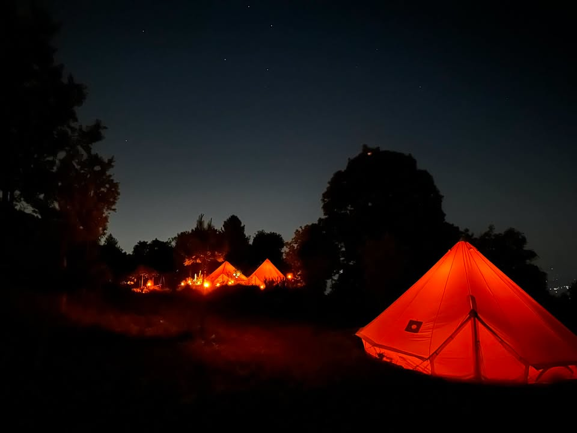
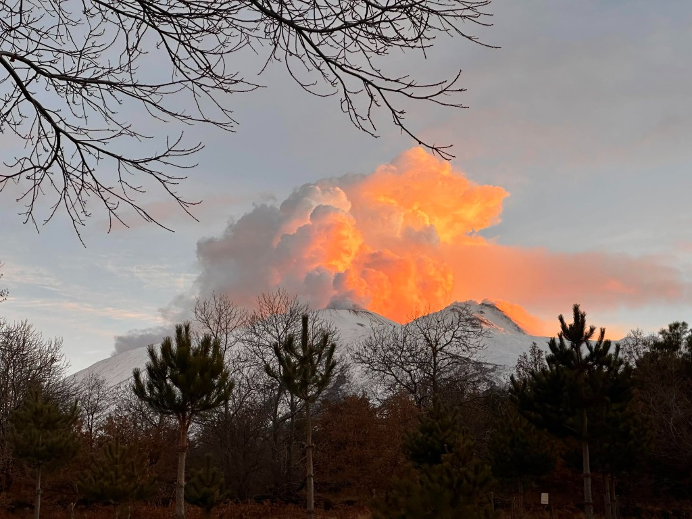
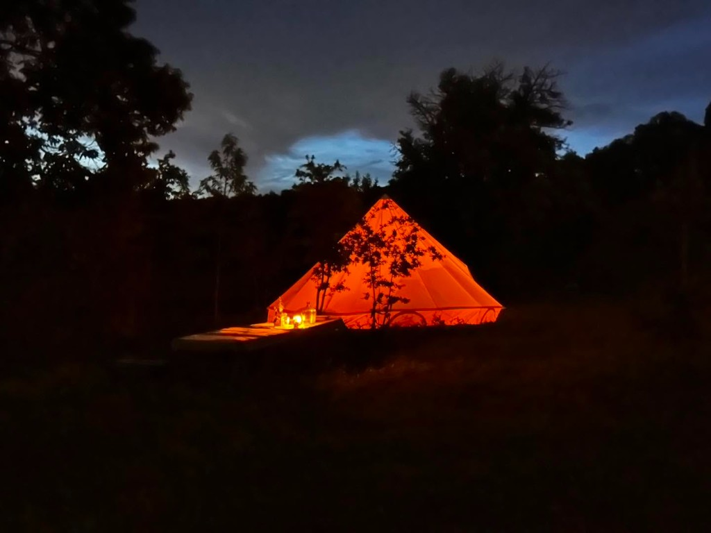
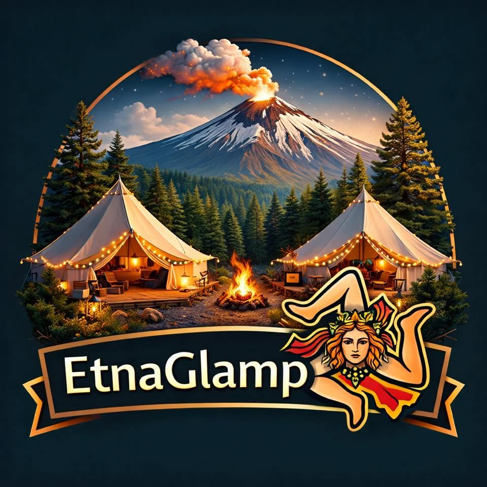
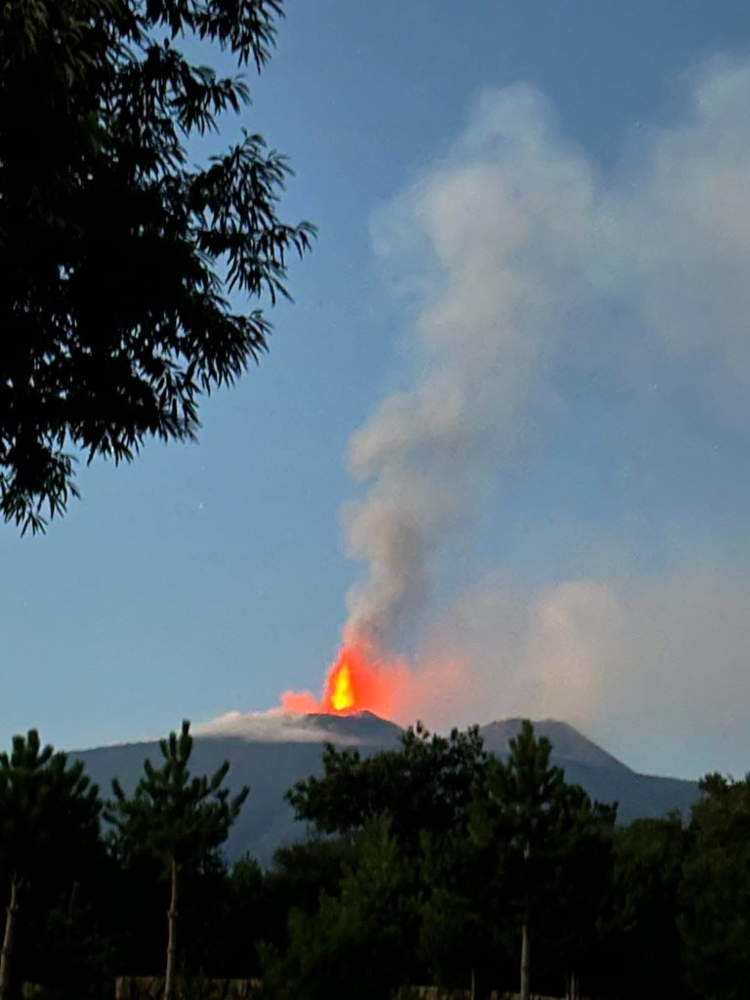

🥾
Baza wypadowa
Idealna lokalizacja dla miłośników trekkingu, fotografii i szukających świętego spokoju. Organizujemy też samochodowe wycieczki po Sycylii.

Sycylia · ponad 1500 m n.p.m.
EtnaGlamp – jedyne takie pole namiotowe i glamping we Włoszech na wysokości ponad 1500 m n.p.m. Przeżyj przygodę życia na zboczach Etny.
Czy kiedykolwiek marzyłeś o poranku z widokiem na dymiący krater i wieczorze przy lampce sycylijskiego wina, tuż pod dywanem gwiazd? EtnaGlamp to coś więcej niż zwykłe pole namiotowe. To nasza pasja, którą stworzyliśmy na wysokości ponad 1500 metrów nad poziomem morza, na zboczach najwyższego aktywnego wulkanu Europy.
Połączyliśmy surowe piękno wulkanicznego krajobrazu z wygodą, która pozwala w pełni odetchnąć. Odetnij się od miejskiego hałasu, poczuj potęgę natury i zregeneruj siły w absolutnie wyjątkowym miejscu na mapie Sycylii.

Idealna lokalizacja dla miłośników trekkingu, fotografii i szukających świętego spokoju. Organizujemy też samochodowe wycieczki po Sycylii.
Księżycowy krajobraz, zastygła lawa na wyciągnięcie ręki i potęga przyrody wokół Ciebie – codziennie inny spektakl natury.
Brak smogu świetlnego sprawia, że nocne niebo nad naszym glampingiem zapiera dech w piersiach. Prawdziwy spektakl kosmosu.
Prowadzimy to miejsce z sercem. Podpowiemy Ci, gdzie zjeść najlepszą pastę i które szlaki na Etnie są najpiękniejsze.
Od luksusowego glampingu po klasyczny camping i wycieczki z przewodnikiem – każda opcja to inny sposób na odkrycie Etny.
Dla szukających wygody w sercu natury
Zanurz się w luksusie bez rezygnacji z dzikiej przyrody. Nasze gotowe namioty bell tent to Twoja prywatna oaza na wulkanie – z prawdziwym łóżkiem, miękką pościelą i ciepłym światłem lamp, które rozświetla nocne niebo za oknem.

Dla prawdziwych poszukiwaczy przygód
Postaw własny namiot na wulkanicznym podłożu i poczuj się jak odkrywca. To czysta, autentyczna przygoda – bez zbędnych dodatków, za to z widokiem, którego nie zapomnisz do końca życia.
| Strefa Glamping | Pole Namiotowe | Wycieczki z przewodnikiem | |
|---|---|---|---|
| Dla kogo? | Miłośnicy komfortu | Poszukiwacze przygód | Wszyscy chętni |
| Co w cenie? | Namiot, łóżko, pościel | Miejsce pod własny namiot | Przewodnik + transfer |
| Poziom trudności | Łatwy | Łatwy | Od spokojnego do wymagającego |
Najwyższy aktywny wulkan Europy czeka na Ciebie. Wybierz wariant dopasowany do Twojej kondycji i odwagi – my zadbamy o transfer z Katani i bezpieczną, niezapomnianą przygodę.
Dotrzyj tam, gdzie kończy się ziemia i zaczyna niebo
Najwyższa możliwa wysokość i emocje, jakich nie da się opisać słowami. Stoisz na szczycie najwyższego aktywnego wulkanu Europy – dymiący krater u Twoich stóp, panorama Sycylii wokół. To przygoda, którą zapamiętasz na zawsze.
Spektakularne panoramy bez wyczerpującego trekkingu
Chcesz poczuć potęgę Etny, ale wolisz wygodę? Ten wariant zabierze Cię wysoko – bez intensywnego wchodzenia na sam szczyt. Wulkaniczne krajobrazy, zapierające dech widoki i adrenalina w bezpiecznym wydaniu.
Zobacz Etny z perspektywy, jakiej nie znajdziesz nigdzie indziej
Idealna opcja, by podziwiać księżycowy, wulkaniczny krajobraz bez wysiłku. Kolejka linowa unosi Cię nad zastygłą lawą, dymiące kratery i surrealistyczne formacje skalne – jak na innej planecie.
Poznaj Etnę w swoim tempie – bez pośpiechu i bez wind
Spacer wokół wygasłych kraterów Silvestri to doskonały wybór na spokojne zwiedzanie. Poczujesz pod stopami żar zastygłej lawy, zobaczysz formacje sprzed lat i zrozumiesz, dlaczego Etna fascynuje świat – bez wspinaczki i bez kolejek.
Zobacz zdjęcia i przeczytaj recenzje osób, które spędziły noc na wulkanie.
★★★★★„Prowadzą to przesympatyczni ludzie z ogromną pasją i fantastycznym podejściem do swoich gości. Panuje tam niesamowita atmosfera, a każda chwila to prawdziwa przygoda. Gorąco polecam!"
★★★★★„Wraz z znajomymi byłam na Etnie dzięki wsparciu EtnaGlamp. Niezapomniane przeżycie. EtnaGlamp – jesteście fantastyczni ❤️"


Masz pytania lub chcesz zarezerwować termin? Skontaktuj się z nami pod numerem +39 379 270 3912 albo wyślij wiadomość na naszym profilu na Facebooku – odpowiadamy najszybciej jak to możliwe!
Etna, Sycylia, Włochy (ponad 1500 m n.p.m.)
+39 379 270 3912
Wyślij nam wiadomość na profilu EtnaGlamp na Facebooku.
Śpij bliżej gwiazd.
Zamieszkaj na aktywnym wulkanie.